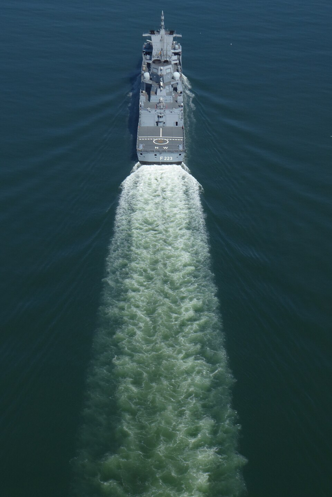

La V que dejan los barcos y los patos, y su ángulo casi constante
Un pato que nada en un lago tranquilo deja detrás una V perfecta. Un barco también. Lo curioso es que, según una predicción de Lord Kelvin, el ángulo de esa V es casi siempre el mismo, unos 19,5° a cada lado, sin importar si el pato nada rápido o despacio. Ese número tiene una explicación muy elegante, y una excepción que se descubrió hace poco.
Según Marc Rabaud y Frédéric Moisy, de la Universidad París-Sur, el patrón de la estela fue explicado primero por Lord Kelvin [1]. La clave fue reconocer que la velocidad de las olas en la superficie del agua depende de su longitud de onda: es la dispersión [1]. Con eso, Kelvin predijo que el semiángulo de la estela es [1]:
Y, sorprendentemente, que ese ángulo no depende de la velocidad del objeto [1].

La pieza central es una propiedad de las olas en aguas profundas que muestra David Tong, de la Universidad de Cambridge: la energía de un grupo de olas viaja a la mitad de la velocidad de las crestas [2]. Un barco produce continuamente olas que lo acompañan. Pero la energía de esas olas se queda atrás, porque avanza a la mitad de su velocidad. Al sumar todas las olas que el barco fue dejando en su camino, la energía queda concentrada dentro de una V cuyo semiángulo cumple sen θ = 1/3 (un razonamiento a partir del resultado de Tong; la construcción geométrica completa es la de Kelvin).
Los mensajeros lentos: imaginá un auto que va soltando mensajeros a cada momento, y cada mensajero camina en cualquier dirección, pero a la mitad de lo que corresponde. Al rato, todos los mensajeros quedan dentro de una cuña detrás del auto. El ángulo de esa cuña lo fija la proporción entre las velocidades, no la velocidad del auto: por eso la V del barco tiene siempre el mismo ángulo.
Rabaud y Moisy señalan que la predicción de Kelvin fue cuestionada por muchas observaciones de estelas bastante más angostas de lo previsto [1]. Para estudiarlo, analizaron imágenes aéreas de estelas de barcos de la base de datos de Google Earth [1]. Encontraron que a baja velocidad las estelas siguen el régimen clásico de Kelvin, pero a alta velocidad el ángulo disminuye en proporción inversa a la velocidad, de una manera parecida al cono de Mach de un avión supersónico [1].
Su explicación es que el barco no es un punto: tiene un largo L, y eso cambia qué olas genera [1]. La transición entre el régimen de Kelvin y el de Mach ocurre cuando el número de Froude basado en el largo del casco vale alrededor de 0,5 [1]:
Para un barco de 10 metros, eso corresponde a unos 5 m/s, unos 18 km/h (un cálculo propio con la fórmula). Por encima, la estela se vuelve más angosta que la V de Kelvin [1].
Rabaud y Moisy recuerdan que las estelas en forma de V tienen consecuencias prácticas importantes: tienen que ver con la resistencia que siente un barco y con la erosión de las orillas en las vías navegables [1]. Desde los trabajos pioneros de Froude y Kelvin, las olas que generan los barcos son un tema central de la hidrodinámica naval [1].
Una idea de la teoría de ondas: la estela de Kelvin es un ejemplo de cómo la dispersión de las olas, que hace que las largas vayan más rápido que las cortas, organiza un patrón muy regular. Sin dispersión, como en el sonido, la estela de un objeto más rápido que las ondas sería un cono de Mach, cuyo ángulo sí depende de la velocidad [1].
La estela de un pato o de un barco lento forma una V de unos 19,5° a cada lado, el ángulo que Kelvin dedujo a partir de la dispersión de las olas: la energía viaja a la mitad de la velocidad de las crestas, y eso fija el ángulo. Los barcos rápidos rompen la regla: cuando su número de Froude supera 0,5, la estela se angosta como un cono de Mach.
Pregunta para la comunidad: La próxima vez que veas un pato o un bote en un lago, mirá la V de la estela. ¿Te parece que mide unos 39° en total? Con la fórmula de Froude, ¿a qué velocidad tendría que ir un pato de 30 cm para que su estela empiece a angostarse?